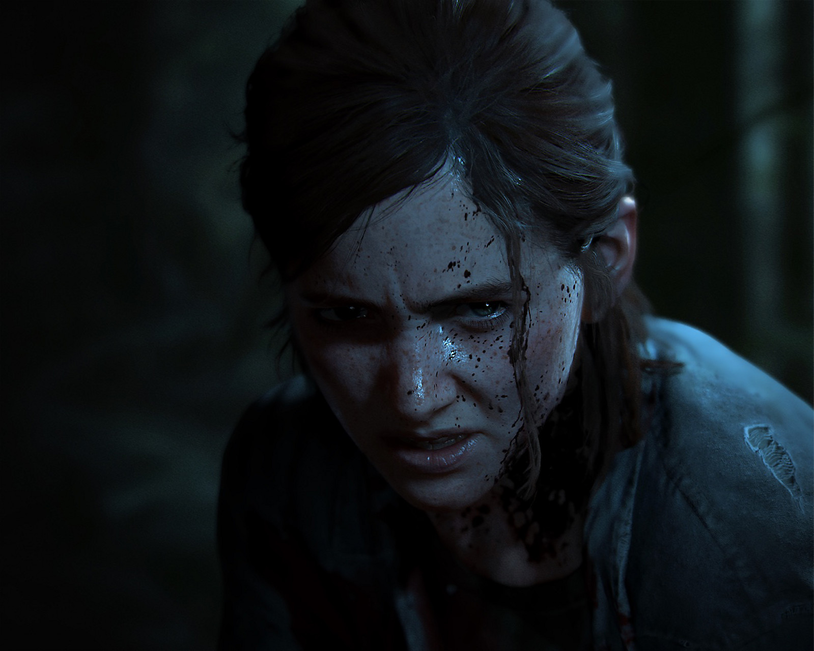

ACERCA DE THE LAST OF US

The Last of Us es una aventura de supervivencia protagonizada por Joel y Ellie. Ella es una adolescente de 14 años que no conoce otra cosa que este planeta Tierra devastado por un terrible virus mientras que él es un superviviente de 40 años torturado por sus propios actos y que verá en Ellie una redención para volver al buen camino. Joel sí vivió en primera persona el paso de un mundo "normal", tal y como lo conocemos ahora, a un entorno hostil y salvaje en el que la naturaleza se ha adueñado de las calles. En este mundo tan salvaje hay millones de personas infectadas por un virus que las convierte en algo similar a unos zombis y, casi lo que es las más peligroso, otros tantos supervivientes sin infectar que estan dispuestos a seguir viviendo cueste lo que cueste, aunque sea a costa de la vida otros seres humanos sanos.
La historia de "The Last Of Us" nos explicará el viaje de costa a costa (de este a oeste) de Joel y Ellie intentando sobrevivir en el trayecto. El juego empezará con Joel siendo contratado por alguien que desconocemos para liberar a Ellie de un centro de cuarentena en el que está encerrada. La epidemia lleva ya 20 años extendida y se ha perdido todo rastro de civilización. Ambos emprenderán un viaje a través de unos Estados Unidos desolados por la destrucción y la epidemia. Las ciudades están, aparentemente, abandonadas y la vegetación ha hecho estragos en la zona urbana destrozando las calles, los edificios, etc.

The Last Of Us
Joel, un despiadado superviviente; y Ellie, una valiente adolescente más sabia que lo propio en su edad; deben trabajar juntos para conseguir seguir con vida en su viaje hacia el Oeste de lo que queda de los Estados Unidos.

The Last Of Us: Left Behind
La trama se desarrolla pocos meses antes del juego original y en esta ocasión se centra en Ellie, algo más inocente y menos castigada. A su lado está su buena amiga Riley, una chica de la que ya supimos algo en el juego original y que ahora conocemos por primera vez.

The Last of Us:Parte Dos
Cuando un evento violento interrumpe esa paz, Ellie se embarca en un viaje implacable para llevar a cabo la justicia y encontrar el cierre. Mientras caza a los responsables uno por uno, se enfrenta a las devastadoras repercusiones físicas y emocionales de sus acciones.